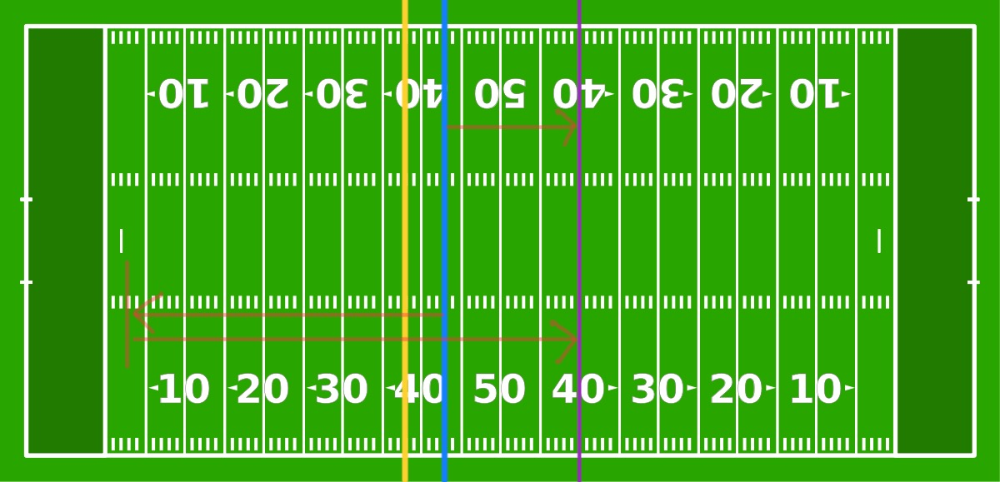

High-Leverage Scenarios
Isolate Scenarios
Not all 4th down decisions are created equal. Depending on a variety of factors such as score, time of game, field position, and others different 4th down decisions can be a lot more important than others. It would be useful to attempt to isolate those high-leverage situations and explore those as they have the potential to tell us a lot more about decision making tendencies of NFL head coaches.
Filtering all 4th down decisions by ones that have a difference of at least 20% in resultant win probability base simply on whether the coach decides to go for it or not gives us a good look at those high leverage situations. Filtering the data further by only including situations in which if the coach goes for it and succeeds, then they are almost guaranteed to win the game (wp_succeed > 0.95)
Let’s visualize this data and make it easier to look through using a familiar plot structure.
I enjoy this plot because it really allows you to put yourself in the shoes of these coaches. All the necessary information is contained in each point when hovered over to make a decision. Try some yourself, hover over a point, get an understanding of the situation, and ask: if I was the coach would I have gone for it? All of these are 4th quarter situations with the game on the line. The final line in the popup is the “answer”, so to speak. If go_boost is positive, then the stats say you should go for it, and if it is negative then you should not. If the number following go_boost is 100, the coach actually did end up going for it, and if it is 0 then they did not go for it (either attempt a field goal or punt). Especially look at the scenarios in which the go_boost is high, meaning it would be a very good decision to go for it. Would you have taken the risk and attempted the conversion? Many coaches do not, despite the fact that it would be the “correct” play. Even after spending a lot of time with these situations, I have a hard time blaming them.
A High Leverage Example
Take this situation for example. You are Vic Fangio, coach of the 2019 Denver Broncos, a struggling team sitting at 2-5 heading into a week 8 match up against the 4-2 Indianapolis Colts. After battling your way through a low-scoring game, you find yourself with the ball with 3:30 left in the game, clinging to a one point lead. All you have to do is hold on and you will get a win against a solid Colts team that could help turn your season around. Just one solid drive down the field will run out the rest of the clock. This turns out to be too much to ask, however, as the drive stalls at the Colts 43-yardline. You have a critical decision to make.
The score is 13-12, your team is winning. There is 1:55 left in the game. It is 4th and 5 at your opponents 43 yardline (you are 43 yards away from scoring). This is too far for a field goal, as it would be 60 yards which is too far for your kicker to attempt. Your options are as follows:
- Go for it and attempt to get the first down. If you pick up the required 5 yards, the game is essentially over and you win. However if you attempt the conversion and do not pick up the first down, then your opponents get the ball back where they stopped you, meaning they do not have far to go (only about 30 yards) themselves to kick a field goal and win the game.
- Punt and give the ball back to the other team near their own end-zone with about 1 minute remaining. They would have to go further to get within field goal range, but you would be giving them the ball back rather than attempting to end the game by picking up the first down.
Below is a diagram of the situation. The blue line is where you currently have the ball and the yellow line is where you need to advance the ball should you decide to go for it. If you decide to go for it and cannot get to the yellow line, your opponent would get the ball wherever they stopped you, most likely around the blue line. The purple line is where your opponent would need to get to in order to kick a field goal to win the game. As shown on the diagram, a punt would mean they must advance the ball much further to reach that purple line.

What would you do here? Make the risky play and attempt to end the game right here and now by getting a first down, but giving your opponent a much better chance to win if you do not get it? Or make the safe play and not even try to end the game, but give your opponent a much lower chance to win than if you failed to reach the yellow line? On that October day back in 2019, Vic Fangio decided to play it safe. He punted the ball so the Colts would get it at their own 11 yard line. They had to go about 60 yards to get into field goal range for Adam Vinateri, their kicker. This is a much further distance than the 20 yards the Colts would have to go if the Broncos failed their 4th down attempt. However this distance did not matter in the end, as the Colts were able to drive 60 yards down the field and kick the game winning field goal with 20 seconds left. Final score: Broncos 13, Colts 15. The Broncos lose and fall to 2-6 at the halfway point of the 2019 NFL season.
It would absolutely be unfair to place all of the blame for the loss on this one decision by Vic Fangio here, as there are so many parts to a football game. For example if the Broncos score more than 15 points (a very low number for a football game) then we aren’t even talking about this decision years after it happened. But the purpose of this exercise is to put yourself in the shoes of these coaches and make tough decisions. Even though I know all of the probabilities associated with each outcome in this situation, I still have a hard time making the call to go for it. It took me a long time to think about each option, and if I’m being honest here, that time was mostly spent trying to convince myself that option 1 was incorrect. I’ll bet many of you felt that way too, none of us wanted to take the risky play. It is a lot easier to stomach option 2 because there isn’t that option of catastrophic failure lurking in the background. The potential to instantly win the game is overshadowed by the threat of giving the ball to the other team in such a good position.
Taking option 1 in this situation resulted in a 10.65% increase in win probability regardless of the outcome (success or failure in the attempt). This should be a clear-cut decision with that kind of increase in win probability. Why is it such a hard decision then? My initial thoughts say that this is the case becasue it is such a big risk to take, as attempting it and failing puts your opponent in a much better position. Just punt it away, take the safe play and make your opponent go win the game, rather than go for it and fail and have loss be on your shoulders. As I said earlier, it is a lot easier to stomach a loss that is the result of conservative decision making than one that is the result of risky decision making.